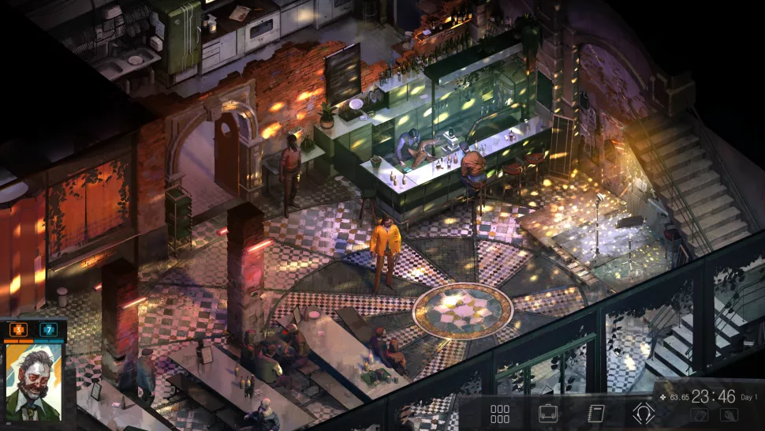
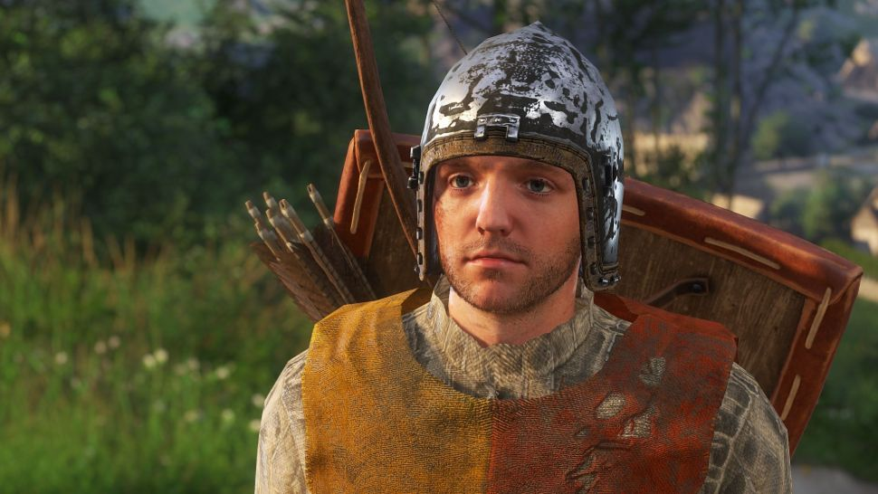

Komputerowa gra fabularna – gatunek gier komputerowych, w którym gracz kontroluje bohatera (lub drużynę) poruszającego się po najczęściej fikcyjnym świecie.
Często gracz tworzy własną postać, określając jej cechy i wygląd zewnętrzny. W trakcie rozgrywki można pomagać postaciom niezależnym i zabijać przeciwników, dzięki czemu awansuje się na kolejne poziomy i zdobywa nowe umiejętności.
Komputerowa gra fabularna może rozgrywać się w różnych konwencjach, np. fantasy, science fiction czy steampunk.
Pierwsze komputerowe gry fabularne powstały w latach 70. XX wieku, inspirowane głównie tradycyjnymi grami fabularnymi.
Wiele gier cRPG ma podobną terminologię, mechanikę i świat gry. Podgatunkami gier fabularnych są: fabularna gra akcji, hack and slash, jRPG, MMORPG, roguelike, MUD i SUD.
Rozwijanie swojej postaci lub całej drużyny, walka z hordami przeciwników, rozmowy z napotkanymi
osobami, setki misji i pobocznych zadań, złożona i fascynująca fabuła –
to właśnie esencja gier RPG.
Magia tego gatunku opiera się na mechanikach walki, jednak o klasie produkcji świadczy
ukazana w niej historia. Świat opowieści potrafi wciągnąć gracza na długie miesiące, przenosząc go
w samo centrum niesamowitych wydarzeń.
Komputerowe gry fabularne zwykle wywodzą się z papierowych gier RPG.
Przykładowo polska gra „Cyberpunk 2077” ma swoje korzenie właśnie w książkowym
podręczniku. Kiedyś grano w nie przy pomocy jedynie kartki i ołówka, teraz zachwycają oszałamiającą
grafiką i porywającą historią.
| |
| |
Data wydania: 2015 | Producent: CD Projekt Red | Sklep: Steam |
Data wydania: 2017 | Producent: Larian Studios | Sklep: Steam |
| |
|  | |
Data wydania: 2019 | Producent: ZA/UM | Sklep: Steam |
Data wydania: 2015 | Producent: Obsidian Entertainment | Sklep: Steam |
| |
| |
Data wydania: 2019 | Producent: Nine Dots Studio | Sklep: Steam |
Data wydania: 2020 | Producent: Ryu ga Gotoku Studio | Sklep: Steam |
| |
| |
Data wydania: 2015 | Producent: Failbetter Games | Sklep: Steam |
Data wydania: 2014 | Producent: Obsidian Entertainment | Sklep: Steam |
| |
|  | |
Data wydania: 2018 | Producent: Warhorse Studios | Sklep: Steam |
Data wydania: 2015 | Producent: tobyfox | Sklep: Steam |
Autor: Miłosz Ciecieląg